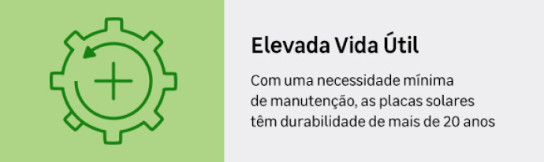
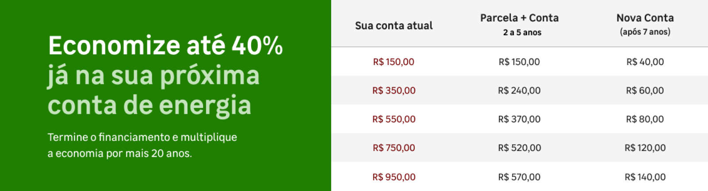

Entra
Nossa abordagem integrada garante que cada fase do processo seja acompanhada de perto, proporcionando segurança e eficiência desde a instalação até o acompanhamento contínuo da performance energética da sua empresa


Com placas fotovoltaicas, você gera sua própria energia, economiza até 95% na conta de luz e ainda valoriza seu imóvel em até 15%. O investimento se paga em cerca de 6 anos, e em algumas cidades, é possível obter desconto no IPTU por práticas sustentáveis.

Reduza seus custos operacionais enquanto lidera o caminho para um futuro mais eficiente e sustentável. Descubra como podemos ajudar sua empresa – entre em contato com a EnergiaTrack agora!
Reduza seus custos operacionais enquanto lidera o caminho para um futuro mais eficiente e sustentável. Descubra como podemos ajudar sua empresa – entre em contato com a EnergiaTrack agora!
Reduza seus custos operacionais enquanto lidera o caminho para um futuro mais eficiente e sustentável. Descubra como podemos ajudar sua empresa – entre em contato com a EnergiaTrack agora!
Economize agora com a EnergiaTrack: A escolha inteligente em energia solar

Sobre nós
Contato
Navegação
Redes Sociais
Sobre
© 2024 EnergiaTrack. Todos os direitos reservados.
A Energiatrack oferece soluções completas em energia solar para residências e empresas. Com foco em sustentabilidade, eficiência e economia, nossa missão é tornar a energia limpa acessível para todos. Garantimos um serviço personalizado, desde a instalação até a manutenção, proporcionando segurança e qualidade em cada projeto.